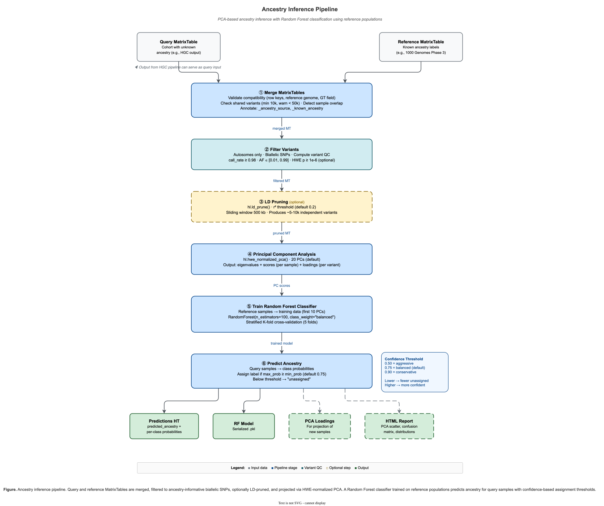

Ancestry Inference¶
The ancestry inference module provides tools to predict genetic ancestry for samples using PCA-based projection and Random Forest classification against a labeled reference panel (e.g., 1000 Genomes, HapMap).

Ancestry inference pipeline — from reference panel merge through variant filtering, LD pruning, PCA, Random Forest training, and ancestry prediction.
Overview¶
The ancestry inference pipeline follows standard population genetics practices:
- Merge query cohort with labeled reference panel by shared variants
- Filter to high-quality, common, biallelic SNPs on autosomes
- LD prune to remove correlated variants
- Compute PCA using HWE-normalized principal component analysis
- Train classifier (Random Forest) on labeled reference samples
- Predict ancestry for unlabeled query samples with probability thresholds
Key Features¶
- Standard Methodology: Implements the same approach used by gnomAD and other major projects
- Configurable Thresholds: All filtering and classification parameters are customizable
- Cross-Validation: Built-in model validation with confusion matrix reporting
- HTML Reports: Comprehensive reports with PCA plots, ancestry distributions, and metrics
- Probability Thresholds: Samples below confidence threshold are marked "unassigned"
- CLI and Python API: Use via command-line or directly in Python scripts
Quick Start¶
Command-Line Interface¶
# Basic usage
hvantk ancestry-inference \
-q cohort.mt \
-r 1kg_reference.mt \
--ancestry-col super_pop \
-o ancestry_predictions.ht
# With HTML report and TSV export
hvantk ancestry-inference \
-q cohort.mt \
-r 1kg_reference.mt \
--ancestry-col super_pop \
-o ancestry_predictions.ht \
--generate-report \
--export-tsv
# Conservative assignment (higher confidence threshold)
hvantk ancestry-inference \
-q cohort.mt \
-r 1kg_reference.mt \
--ancestry-col super_pop \
-o ancestry_predictions.ht \
--min-prob 0.90 \
--generate-report
Python API¶
import hail as hl
from hvantk.algorithms.ancestry import run_ancestry_inference
# Initialize Hail
hl.init()
# Load data
query_mt = hl.read_matrix_table("cohort.mt")
reference_mt = hl.read_matrix_table("1kg_reference.mt")
# Run inference
result = run_ancestry_inference(
query_mt=query_mt,
reference_mt=reference_mt,
ancestry_col="super_pop",
min_prob=0.75,
)
# Get predictions as DataFrame
predictions = result.get_predictions_df()
print(predictions['predicted_ancestry'].value_counts())
# Generate HTML report
result.generate_report("ancestry_report.html")
# Plot PCA
fig = result.plot_pca()
fig.savefig("pca_plot.png", dpi=300)
# Annotate original MatrixTable with predictions
annotated_mt = result.annotate_matrixtable(query_mt)
Algorithm Details¶
Step 1: MatrixTable Merging¶
The pipeline performs an inner join on variants present in both query and reference MatrixTables:
- Variants are matched by
(locus, alleles)key - Samples are annotated with source ("query" or "reference")
- Reference samples retain their known ancestry labels
Validation checks: - Same reference genome (GRCh37 or GRCh38) - Compatible row key structure - Sufficient shared variants (default: 10,000 minimum)
Step 2: Variant Filtering¶
Variants are filtered to retain high-quality, informative markers:
| Filter | Default | Rationale |
|---|---|---|
| Autosomes only | chr1-22 | Avoid sex chromosome complications |
| Biallelic | 2 alleles | Simplify analysis |
| SNPs only | is_snp() |
More reliable than indels |
| Call rate | >= 98% | Ensure data quality |
| Minor allele frequency | 1-99% | Common variants informative for ancestry |
| HWE (optional) | p > 1e-6 | Remove potential genotyping errors |
Step 3: LD Pruning¶
Linkage disequilibrium pruning removes correlated variants:
- Default r2 threshold: 0.2
- Default window size: 500 kb
- Typically reduces to 50,000-200,000 independent variants
Step 4: PCA Computation¶
HWE-normalized PCA captures population structure:
- Uses
hl.hwe_normalized_pca()(Patterson et al., 2006) - Default: 20 PCs computed, 10 used for classification
- Loadings saved for future sample projection
Step 5: Random Forest Classification¶
A Random Forest classifier is trained on reference samples:
- Features: First N principal components (default: 10)
- Class balancing: Automatic weighting for imbalanced populations
- Cross-validation: 5-fold stratified CV (optional)
Step 6: Ancestry Prediction¶
Predictions are made with probability thresholds:
| Threshold | Behavior |
|---|---|
| 0.50 | Aggressive; may misclassify admixed individuals |
| 0.75 | Balanced (default) |
| 0.90 | Conservative; more "unassigned" but higher confidence |
Samples with max probability below threshold are labeled "unassigned".
CLI Reference¶
hvantk ancestry-inference [OPTIONS]
Options:
Required:
-q, --query-mt PATH Path to query MatrixTable
-r, --reference-mt PATH Path to reference MatrixTable with labels
-o, --output-ht PATH Output path for predictions Table
Reference Panel:
--ancestry-col TEXT Column with ancestry labels [default: ancestry]
Output:
--output-dir PATH Directory for additional outputs
--generate-report Generate HTML report with visualizations
--export-tsv Export predictions as TSV file
--save-model Save trained RF model (pickle)
--save-loadings Save PCA loadings for projection
Variant Filtering:
--min-af FLOAT Minimum allele frequency [default: 0.01]
--max-af FLOAT Maximum allele frequency [default: 0.99]
--min-call-rate FLOAT Minimum variant call rate [default: 0.98]
--apply-hwe-filter Apply Hardy-Weinberg equilibrium filter
--hwe-p FLOAT HWE p-value threshold [default: 1e-6]
LD Pruning:
--ld-r2 FLOAT LD pruning r2 threshold [default: 0.2]
--ld-window INTEGER LD pruning window in bp [default: 500000]
--skip-ld-pruning Skip LD pruning step
PCA:
--n-pcs INTEGER Number of PCs to compute [default: 20]
--n-pcs-classify INTEGER Number of PCs for classification [default: 10]
Classification:
--n-estimators INTEGER Number of RF trees [default: 100]
--min-prob FLOAT Min probability for assignment [default: 0.75]
--seed INTEGER Random seed [default: 42]
Validation:
--skip-validation Skip cross-validation of model
--n-cv-folds INTEGER Number of CV folds [default: 5]
Checkpointing:
--checkpoint-path PATH Path for intermediate checkpoints
--overwrite Overwrite existing outputs
Logging:
--log-level [DEBUG|INFO|WARNING|ERROR]
Logging level [default: INFO]
Input Requirements¶
Query MatrixTable¶
- Standard Hail MatrixTable with genotype calls
- Row key:
(locus, alleles) - Entry field:
GT(orLGTfor split multi-allelics) - Column key: sample ID (
s)
Reference MatrixTable¶
- Same structure as query MT
- Must have ancestry label column annotation
- Labels should be categorical (e.g., "EUR", "AFR", "EAS", "SAS", "AMR")
- Recommend >=30 samples per population
Supported Reference Panels¶
| Panel | Populations | Samples | Notes |
|---|---|---|---|
| 1000 Genomes Phase 3 | 5 super-populations | 2,504 | Widely used standard |
| HapMap Phase 3 | 11 populations | 1,184 | Curated for pop-gen |
| gnomAD | 8 populations | Variable | WES/WGS specific |
Output Format¶
Predictions Hail Table¶
Schema:
Row key: 's' (sample ID)
Row fields:
- predicted_ancestry: str Population label or "unassigned"
- ancestry_probability: float Max class probability
- prob_<POP>: float Per-population probabilities
- PC1...PCn: float Principal component scores
- _ancestry_source: str "query" or "reference"
- _known_ancestry: str Original label (reference only)
Additional Outputs¶
| File | Description |
|---|---|
predictions.tsv |
TSV export (with --export-tsv) |
ancestry_report.html |
HTML report (with --generate-report) |
rf_model.pkl |
Trained model (with --save-model) |
pca_loadings.ht |
PCA loadings (with --save-loadings) |
pipeline_stats.json |
Pipeline statistics |
HTML Report Contents¶
The HTML report includes:
- Summary Cards: Sample counts, populations, shared variants
- Ancestry Distribution: Bar chart and table of predictions
- PCA Visualization: Two-panel plot (full view + zoomed cluster)
- Model Performance: Cross-validation accuracy, confusion matrix
- Probability Distribution: Histogram of prediction probabilities
- Sample Predictions: Table of top predictions
- Configuration: All pipeline parameters
Python API Reference¶
Main Function¶
from hvantk.algorithms.ancestry import run_ancestry_inference, PipelineConfig
result = run_ancestry_inference(
query_mt: hl.MatrixTable,
reference_mt: hl.MatrixTable,
ancestry_col: str = "ancestry",
config: PipelineConfig = None,
**kwargs,
) -> AncestryInferenceResult
AncestryInferenceResult Methods¶
# Data access
result.get_predictions_df() -> pd.DataFrame
result.get_scores_df() -> pd.DataFrame
result.get_query_predictions() -> pd.DataFrame
result.get_reference_predictions() -> pd.DataFrame
result.get_accuracy() -> float
# Visualization
result.plot_pca(pc_x=1, pc_y=2, **kwargs) -> Figure
result.plot_pca_panel(**kwargs) -> Figure
result.plot_ancestry_proportions(**kwargs) -> Figure
result.plot_probability_distribution(**kwargs) -> Figure
result.plot_variance_explained(n_pcs=10) -> Figure
result.plot_confusion_matrix(normalize=True) -> Figure
# Output
result.generate_report(output_path, title="...") -> Path
result.save(output_path, save_model=True, save_loadings=True) -> Dict
# MatrixTable annotation
result.annotate_matrixtable(mt) -> hl.MatrixTable
PipelineConfig¶
from hvantk.algorithms.ancestry import PipelineConfig
config = PipelineConfig(
# Variant filtering
min_af=0.01,
max_af=0.99,
min_call_rate=0.98,
apply_hwe_filter=False,
hwe_p_threshold=1e-6,
# LD pruning
ld_r2=0.2,
ld_window=500000,
skip_ld_pruning=False,
# PCA
n_pcs=20,
# Classification
n_pcs_classify=10,
n_estimators=100,
min_prob=0.75,
random_seed=42,
# Validation
validate_model=True,
n_cv_folds=5,
# Checkpointing
checkpoint_path=None,
overwrite_checkpoints=False,
)
Examples¶
Example 1: Basic Ancestry Inference¶
import hail as hl
from hvantk.algorithms.ancestry import run_ancestry_inference
hl.init()
# Load data
query_mt = hl.read_matrix_table("my_cohort.mt")
reference_mt = hl.read_matrix_table("1kg_phase3.mt")
# Run with defaults
result = run_ancestry_inference(
query_mt=query_mt,
reference_mt=reference_mt,
ancestry_col="super_pop",
)
# Print summary
print(result.prediction_summary())
# {'EUR': 450, 'AFR': 230, 'EAS': 180, 'SAS': 90, 'unassigned': 50}
# Save results
result.save("output/ancestry")
Example 2: Conservative Assignment¶
# Use higher probability threshold for more confident assignments
result = run_ancestry_inference(
query_mt=query_mt,
reference_mt=reference_mt,
ancestry_col="super_pop",
min_prob=0.90, # Higher threshold
n_pcs_classify=15, # More PCs
)
# Check unassigned rate
predictions = result.get_query_predictions()
unassigned_rate = (predictions['predicted_ancestry'] == 'unassigned').mean()
print(f"Unassigned rate: {unassigned_rate:.1%}")
Example 3: Custom Visualization¶
# Create custom PCA plot
fig = result.plot_pca(
pc_x=1,
pc_y=2,
show_query_as_undefined=True, # Show query as "Undefined"
figsize=(12, 10),
alpha=0.8,
)
fig.savefig("pca_custom.png", dpi=300)
# Two-panel plot (full + zoomed)
fig = result.plot_pca_panel(filter_population="EUR")
fig.savefig("pca_panel.png", dpi=300)
Example 4: Using with Downstream Analysis¶
# Annotate original MatrixTable with ancestry
annotated_mt = result.annotate_matrixtable(query_mt)
# Filter to European samples
eur_mt = annotated_mt.filter_cols(
annotated_mt.predicted_ancestry == "EUR"
)
# Run ancestry-stratified GWAS
# ... continue with analysis
Troubleshooting¶
Common Issues¶
"No shared variants between query and reference"¶
- Ensure both MTs use the same reference genome
- Check that variants are normalized (left-aligned, trimmed)
- Verify row keys are
(locus, alleles)
"Only N shared variants; need at least 10,000"¶
- Your cohort may have been genotyped on a different platform
- Consider using a more compatible reference panel
- Use
--min-shared-variantsto lower the threshold (not recommended)
"Population X has only N samples (need 10)"¶
- Reference panel may have insufficient samples for some populations
- Consider merging similar populations or excluding sparse ones
Many samples marked "unassigned"¶
- May indicate admixed individuals
- Try lowering
--min-probthreshold - Check if query cohort matches reference panel populations
Cross-validation accuracy is low¶
- Reference panel populations may overlap in PC space
- Try using more PCs (
--n-pcs-classify 15) - Some populations are inherently difficult to separate
Performance Tips¶
- Use checkpointing for large datasets:
--checkpoint-path /tmp/ancestry - Skip LD pruning if variants are pre-filtered:
--skip-ld-pruning - Reduce PCs if memory is limited:
--n-pcs 10
References¶
- Patterson N, Price AL, Reich D. (2006). Population structure and eigenanalysis. PLoS Genet. 2(12):e190.
- Price AL, et al. (2006). Principal components analysis corrects for stratification in genome-wide association studies. Nat Genet. 38(8):904-9.
- 1000 Genomes Project Consortium. (2015). A global reference for human genetic variation. Nature. 526(7571):68-74.
See Also¶
- HGC Joint Genotyping - Joint genotyping pipeline
- Usage Examples - General usage documentation
- Architecture - Project architecture
See Installation for setup, Contributing for development workflow.